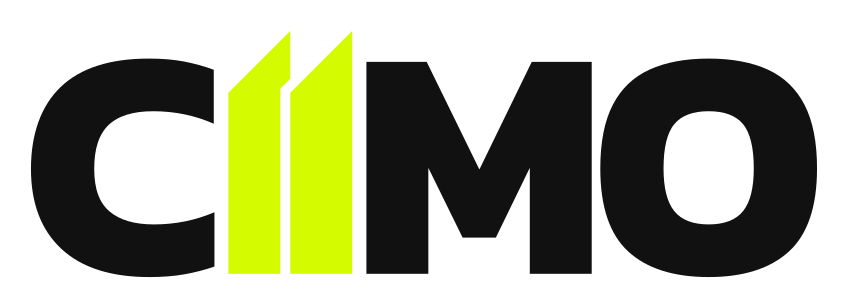
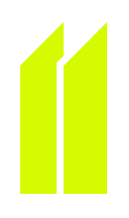

Clara
Explica antes de impressionar. Informacao importante nunca depende apenas de cor ou decoracao.
Diretrizes oficiais para manter a marca CIIMO consistente em produtos digitais, comunicacao, documentos e ambientes fisicos.
A CIIMO transforma dados de mercado, carteira e fluxo financeiro em leitura pratica. A marca deve transmitir precisao, movimento e confianca sem parecer distante ou excessivamente tecnica.
Explica antes de impressionar. Informacao importante nunca depende apenas de cor ou decoracao.
Numeros possuem contexto, fonte e natureza. Estimativas sao sempre identificadas como aproximadas.
Textos curtos, verbos objetivos e hierarquia visual firme conduzem a proxima decisao.
Preto, marfim e verde eletrico criam uma presenca urbana, proprietaria e reconhecivel.
A assinatura completa e a escolha padrao. O simbolo compacto e reservado a espacos restritos como sidebar fechada, favicon, avatar de produto e icone do aplicativo.



Consistencia vem de regras simples e mensuraveis. Use o modulo x, equivalente a largura de uma das hastes do simbolo, para definir protecao e afastamentos.
nao reduzir alemAssinatura alinhada ao inicio, com 24 px de margem.
Somente o simbolo, centralizado na mesma altura visual.
Logo a esquerda; acoes e perfil permanecem a direita.
O verde identifica marca, selecao e acao principal. Cores auxiliares devem carregar significado e nunca competir com a assinatura.
#D4FB00Marca e acao principal#000000Fundo principal#F4F1EATexto principal#111111Superficies#5EE09BConfirmacao#4DA3FFInformacao e fluxo#FFC452Destaque financeiro#FF8B8BErro e riscoKanit e a familia oficial do aplicativo. Sua geometria reforca o carater urbano da marca e sustenta tanto interfaces densas quanto comunicacao editorial.
Thin 100 · Regular 400 · Medium 500 · SemiBold 600 · Bold 700 · Black 900
ABCDEFGHIJKLMNOPQRSTUVWXYZO sistema usa uma escala curta para reduzir decisoes arbitrarias. No App nativo, profundidade e criada sem sombras: borda, contraste e espacamento fazem a hierarquia.
6 · 10 · 16 · 24 · 3214 · 16 · 24 · pillA identidade tambem vive no texto e no comportamento. A CIIMO e segura e objetiva, mas nao promete resultados financeiros.
Explicita que o numero e uma estimativa baseada nos dados disponiveis.
Promessas absolutas conflitam com a natureza projetiva da plataforma.
Acao simples e direta, centrada no que a pessoa deseja realizar.
Texto tecnico, impessoal e redundante no contexto da tela.
Use somente estes arquivos. Nao redesenhe o simbolo, nao converta o nome em outra fonte e nao altere os paths do SVG.
{kind=link}
{kind=link}
{kind=link}
{kind=link}
{kind=link}